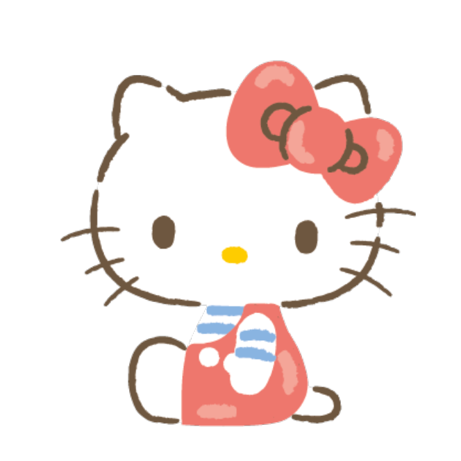
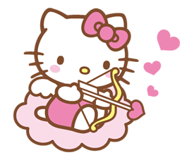

Hello Kitty
Hello Kitty (ハローキティ HarōKiti?) es una marca y personaje ficticio producido por la compañía japonesa Sanrio y que ha sido durante mucho tiempo la más popular de esta compañía. Fue diseñada por Yuko Shimizu y el primer producto, se lanzó en Japón en 1974 y en los Estados Unidos en 1976.23 Tras el primer diseño realizado por Shimizu, Yuko Yamaguchi se convirtió en la diseñadora oficial de Hello Kitty y lleva más de veinte años diseñando todo tipo de productos, accesorios y complementos de Hello Kitty.
El personaje es una gata bobtail blanca con un distintivo lazo rosa u otra decoración en su oreja izquierda. No tiene boca para que no exprese sentimientos y la persona que le vea refleje en ella su propio estado de ánimo. Aunque varios usuarios de internet han creado especulaciones e historias sobre esto, atribuyéndole cosas misteriosas o de terror, los famosos crepypastas. Según su historia de fondo, ella es una estudiante perpetua de 3.er grado que vive fuera de Londres.4 En 1976, obtuvo derechos de autor y actualmente es una marca conocida internacionalmente. La línea de Hello Kitty genera unos 250 millones de euros anuales por la venta de licencias.5 Existe un parque temático oficial propiedad de Sanrio, conocido como Sanrio Puroland.

Hello itty se vendió inmediatamente después de la puesta en marcha de 1974, y las ventas de Sanrio aumentaron siete veces hasta 1978. Se publican regularmente nuevas series de Hello Kitty en diferentes diseños temáticos, siguiendo las tendencias actuales. Yuko Yamaguchi, la diseñadora principal de la mayor parte de la historia de Hello Kitty, ha dicho que se inspira en la moda y el cine para la creación de nuevos diseños.
Según Sanrio, en 1999 Hello Kitty apareció en 12 000 productos anuales diferentes. En 2008, Hello Kitty fue responsable de reso que tuvo Sanrio y hubo más de 50 000 productos diferentes de la marca Hello Kitty en más de 60 países. A partir de 2007, siguiendo las tendencias de Japón.
Diseño
En agosto de 2014 la revista Time entrevistó a la diseñadora Yuko Yamaguchi, quien explicó las razones de por qué el diseño carece de boca
"Es para que la gente que la mire pueda proyectar sus propios sentimientos en ella, ya que tiene una cara inexpresiva. Kitty parece feliz cuando la gente es feliz. Parece triste cuando ellos están tristes. Por esta razón psicológica nosotros pensamos que ella no debía estar ligada a una emoción y de ahí que no tenga boca."
En el anime y algunas películas animadas Hello Kitty tiene boca e incluso habla con una voz suave y de niña. Esto lo comprobamos en el programa de televisión Hello Kitty Paradise y Hello Kitty's Furry Tale Theater entre otros. Fuera de la animación nunca se le ha representado con boca, tal como la diseñó su creadora.

Productos
Entre los productos de Hello Kitty pueden encontrarse desde material escolar hasta accesorios de moda o joyería.
Hello Kitty tiene su propio álbum de música, Hello World, con canciones inspiradas por Hello Kitty e interpretadas por artistas como Keke Palmer o Cori Yarckin.
En 2007 Sanrio adaptó la imagen de Hello Kitty para atraer al público masculino. En la cabeza de la gata aparecía escrito 'Hello Kitty' manteniendo el perfil del felino y variando el color de su lazo de rosa a azul.
Originalmente dirigido al mercado femenino preadolescente, el rango de productos se ha expandido a muñecas, pegatinas, tarjetas, ropa, accesorios, artículos escolares y papelería, tostadoras, televisores, otros electrodomésticos, masajeadores y equipos informáticos. Estos productos van desde objetos de mercado de masas para los productos de consumo de alta gama y coleccionables raros.